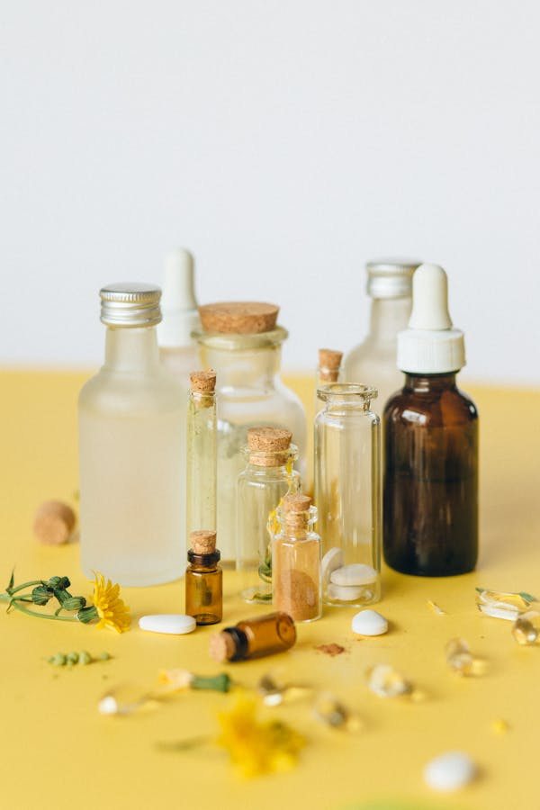

Concursos de apoio à investigação regional realizados.
Centro Académico Clínico dos Açores
Um consórcio que pretende, pelas sinergias entre os seus membros, desenvolver e consolidar um centro de excelência, reconhecido a nível nacional e internacional, na formação pré e pós-graduada de profissionais de saúde, no desenvolvimento de estratégias de investigação inovadoras.
A Nossa Missão
O Centro Académico Clínico dos Açores (CACA) é uma unidade de cooperação entre instituições de ensino superior, unidades de saúde e centros de investigação no arquipélago dos Açores. Criado em parceria com o Governo Regional dos Açores e a Universidade dos Açores, o CACA tem por missão promover a excelência na formação de profissionais de saúde, a investigação translacional e a inovação clínica ao serviço da população açoriana.
Visão
Ser reconhecido nacional e internacionalmente como um polo de referência em investigação clínica e formação avançada, valorizando a singularidade geográfica e biodiversidade dos Açores como ativos estratégicos para a ciência e a saúde.
Enquadramento Regional
Localizado na Região Autónoma dos Açores, o CACA beneficia de uma posição geográfica privilegiada no Atlântico Norte. A insularidade e as características epidemiológicas únicas da população açoriana oferecem oportunidades singulares para a investigação em saúde, nomeadamente em áreas como a genética populacional, doenças raras e saúde ambiental.

Em 2025, o Centro Académico Clínico dos Açores:
Para 2026 queremos continuar a promover a investigação, mas também as melhores práticas clínicas e de gestão, através da rede de sinergias entre todos os membros do CACA.
Atribuídos em apoios a publicações e biobanco açoriano.
Investigadores apoiados em projetos insulares.
Regulamento de reconhecimento mútuo desenvolvido.
Áreas de Investigação
O CACA desenvolve investigação de excelência em áreas estratégicas para a saúde da população açoriana e para a inovação clínica.
e-Saúde
Desenvolvimento de plataformas digitais e sistemas de informação em saúde que integram registos eletrónicos, prescrição eletrónica e monitorização do paciente à distância, promovendo a eficiência dos serviços de saúde nos Açores.
Inteligência Artificial em Saúde
Aplicação de algoritmos de aprendizagem automática e redes neuronais ao diagnóstico por imagem, previsão de surtos epidemiológicos e personalização de tratamentos, utilizando dados clínicos do ecossistema de saúde regional.
Telemedicina
Implementação de soluções de consultas remotas e telemonitorização para ultrapassar as barreiras geográficas da insularidade, garantindo o acesso equitativo a cuidados especializados em todas as ilhas do arquipélago.
Epidemiologia Insular
Estudo das particularidades epidemiológicas da população açoriana, com foco em doenças raras, genética populacional e fatores ambientais únicos que influenciam a saúde nas ilhas do Atlântico Norte.
O CONSÓRCIO
HOSPITAL DO DIVINO ESPÍRITO SANTO
UNIVERSIDADE DOS AÇORES
UNIDADE DE SAÚDE ILHA DE SÃO MIGUEL
CENTRO DE ONCOLOGIA DOS AÇORES
Apoio à investigação
Se já só lhe falta apoio financeiro para investigar, o Fundo de Financiamento à Investigação CACA está à disposição de todos os profissionais dos membros do consórcio, com apoios não sujeitos a impostos.
Ver apoios disponíveisQuer investigar?
Se quer investigar, mas ainda não sabe por onde começar, pode integrar uma bolsa de investigadores e aguardar o contacto. Se já sabe, também pode submeter a sua proposta diretamente.
Aderir à bolsa de investigadoresOportunidades
O CACA disponibiliza diversas oportunidades para estudantes, investigadores e profissionais de saúde que queiram contribuir para a investigação e inovação clínica nos Açores.
Estágios Clínicos e de Investigação
Oportunidades de estágio em contexto hospitalar e laboratórios de investigação, abertas a alunos de licenciatura e mestrado da Universidade dos Açores e outros parceiros nacionais.
Bolsas de Investigação
Bolsas anuais de apoio a projetos de investigação em saúde, financiadas pelo Fundo CACA e pela FCT Açores, destinadas a investigadores juniores e séniores.
Projetos de Tese e Dissertação
Acompanhamento e co-orientação de teses de mestrado e doutoramento em áreas prioritárias do CACA, com acesso a dados clínicos e infraestruturas laboratoriais.
Os apoios CACA a publicações requerem, sempre, a menção à afiliação ao consórcio nos artigos concorrentes.
Ver exemplosNotícias e eventos
Ver todas as notícias
ULS AÇORES
12 OUT, 2024
ULS Açores reforça prevenção com nova Unidade Móvel
A Unidade Local de Saúde passou a dispor de uma nova Unidade Móvel para rastreios de saúde, exames e outras ações de prevenção.
Ler mais
INVESTIGAÇÃO
05 OUT, 2024
Projeto coordenado pela Universidade dos Açores usa música
A intervenção baseia-se em sessões semanais de música e canto para prevenir depressão em população vulnerável.
Ler mais
INSTITUCIONAL
28 SET, 2024
Plano de Ação para a Humanização 2025-2027
O plano resulta de um trabalho de cocriação, articulação e escuta dos serviços de saúde regionais.
Ler maisContactos e Localização
Telefone
Morada
Rua da Universidade, n.º 1
9500-321 Ponta Delgada
Ilha de São Miguel — Açores, Portugal